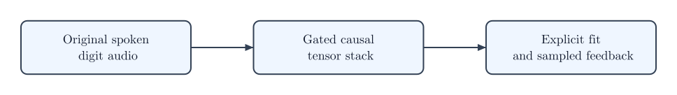
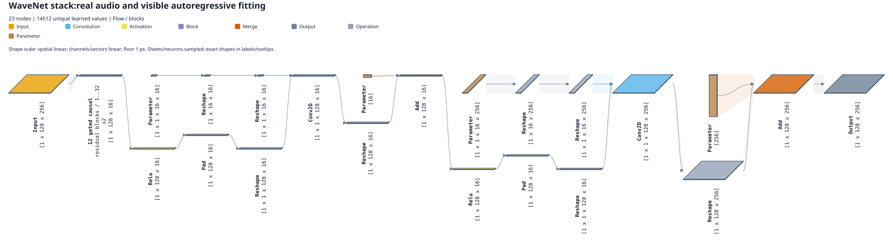
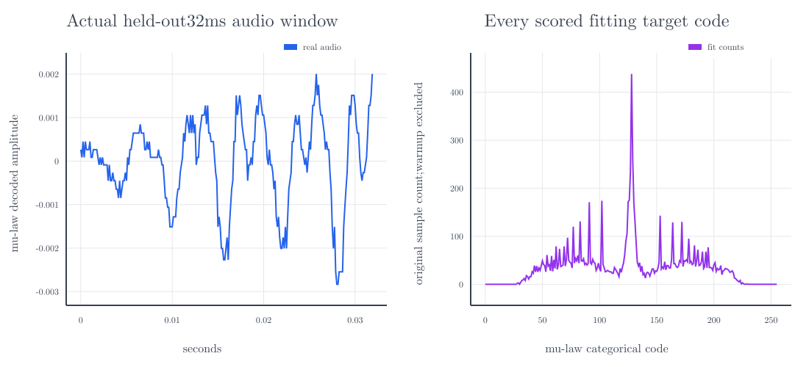
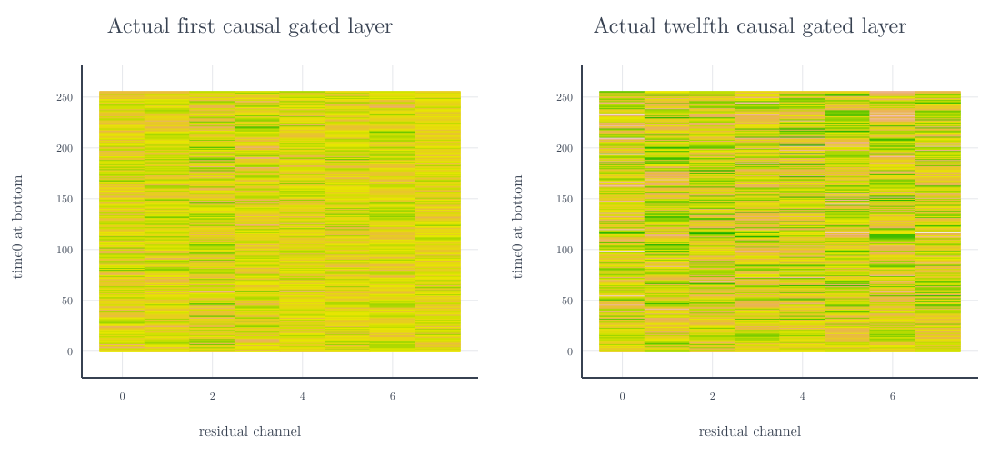
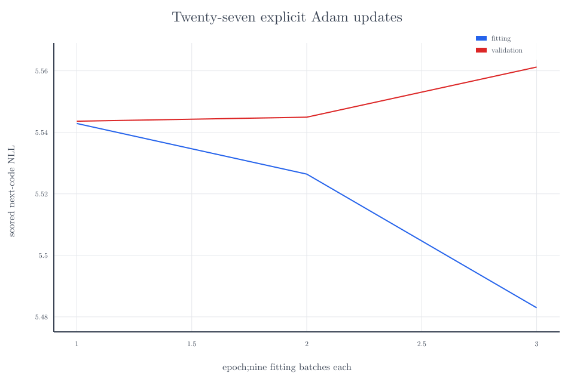
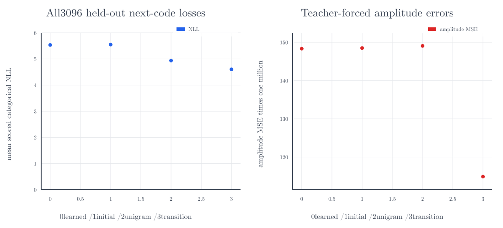
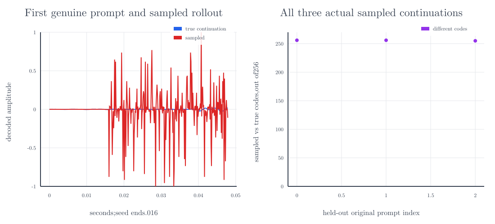

WaveNet stack:real audio and visible autoregressive fitting
Abstract
Genuine speaker-disjoint spoken-digit windows feed a complete gated causal stack. Explicit SGD references,all27 Adam updates,teacher-forced metrics and genuine sampled feedback reveal the limits of the short fit.
Source example: examples/cpp/source/nn/1_convolutional_neural_networks/1.9_1d_convolutions/wavenet_stack.cpp.
The method
Quantize original8kHz audio with tensor mu-law256,learn next-code distributions after127warmup samples,and expose every optimizer update. Restore76 learned arrays,verify causal prefixes,and generate256new codes per real prompt using only previous sampled codes.
The concept diagram below is drawn by dm::graphics::Diagram. Its editable C++
source is the complete block below; regeneration uses the same datamunge toolchain
as the numerical examples. Exports consume the saved local SVG.
#include <dm/dm.hpp>
int main() {
std::filesystem::create_directories("build");
dm::graphics::Diagram diagram;
diagram.node("n0", {0.0, 0}, "Original spoken\n digit audio");
diagram.node("n1", {5.2, 0}, "Gated causal\n tensor stack");
diagram.node("n2", {10.4, 0}, "Explicit fit\n and sampled feedback");
diagram.edge("n0", "n1").edge("n1", "n2");
diagram.save_svg("build/wavenet_stack_concept.svg");
}
Executed tensor architecture
The complete twelve-block gated residual stack is grouped at its skip-sum boundary. Change detail to Layers or Operations to inspect its branches and primitives.
This figure executes the inference configuration shown in the code, using a zero-valued shape probe without fitting or loading a checkpoint. Named stage boundaries group whole subgraphs where available; other nodes retain functional-layer detail. Exact batch-inclusive shapes and reachable parameter totals come from the trace. Shared linear scales map spatial dimensions and channel counts to blocks; the one-pixel visibility floor is disclosed in the legend. Labels use compact monospace text, rotate counterclockwise and sit beside their own glyphs. Arrows flow left to right; wide diagrams scroll at native size on the website.
#include <dm/dm.hpp>
int main() {
namespace n = dm::nn;
namespace m = n::models;
n::set_num_threads(2);
std::filesystem::create_directories("build");
const m::WaveStackConfig c{8, 16, 6, 2, 256};
n::ParameterStore p(541);
n::Module architecture_model(
[&](const n::Tensor& image) {
const auto out = m::WaveStack(p, image, c);
n::model_stage("12 gated causal residual blocks / 1..32 x2", image, out.skip);
return out.logits;
},
"WaveNet stack:real audio and visible autoregressive fitting");
n::ModelPlotOptions options;
options.style = n::ModelPlotStyle::Flow;
options.detail = n::ModelPlotDetail::Blocks;
options.labels = {.type = n::ModelPlotLabel::NameAndShape, .size = 12, .wrap = 24};
options.spacing = {.layer = 24, .lane = 12, .label = 8, .margin = 20};
options.sizing.spatial_size = 96;
options.sizing.channel_size = 42;
options.sizing.minimum_extent = 1;
options.opacity = .8;
const auto diagram = architecture_model.plot(n::zeros({1, 128, 256}), options);
diagram.save_svg("build/wavenet_stack_architecture.svg");
std::print(
"{} displayed nodes; {} reachable learned values.\n",
diagram.nodes().size(),
diagram.parameter_count());
}23 displayed nodes; 14512 reachable learned values.

Genuine8kHz source recordings and strict next-sample shifts
Use the pinned Free Spoken Digit Dataset v1.0.10 release,16419872bytes, SHA256c680098f5d2355ba7cc4bd8b0ca9e0a24c00ebe3b4c552208889a4d28d4fbc2b. The retained27 original PCM16 mono clips contain digits0/1/2,at8kHz. Take0/1 for george,jackson,yweweler and take0 for lucas,nicolas,theo. Fit18clips/four speakers,validate3clips/theo,test6clips/yweweler. This custom speaker-disjoint teaching split differs from official take-based FSDD evaluation. Windows from a clip are dependent,not separate speakers.
#include <dm/dm.hpp>
int main() {
const std::filesystem::path cache = dm::datasets::data_home();
dm::datasets::prepare_example_data("audio", (cache / "wavenet").string());
}Keep the first1025 actual samples without resampling,peak normalization or synthesized padding. Decode PCM16/32768,then tensor Double mu-law256 encode. At starts0/256/512/768,inputs are256 codes and targets are the next256 codes. There are72fit/12validation/24test windows. Original clips,hashes and source identities remain local. Only time127..255 is scored:129samples/window after 127warmup samples,the complete RF128 history. Plot actual held-out samples and all scored fitting code counts;this is next-audio prediction,not digit classification.
#include <dm/dm.hpp>
int main() {
namespace n = dm::nn;
namespace m = n::models;
n::set_num_threads(2);
std::filesystem::path cache;
if (const auto *p = std::getenv("DATAMUNGE_DATA_DIR"))
cache = p;
else if (const auto *p = std::getenv("XDG_CACHE_HOME"))
cache = std::filesystem::path(p) / "datamunge/datasets";
else
cache = std::filesystem::path(std::getenv("HOME")) / ".cache/datamunge/datasets";
std::filesystem::path root = cache / "wavenet";
if (const auto *p = std::getenv("DATAMUNGE_WAVENET_DIR"))
root = p;
else
dm::datasets::prepare_example_data("audio", root.string());
const auto data = m::LoadWaveStack(root);
const auto &fit = data.pools[0];
const auto &validation = data.pools[1];
const auto &test = data.pools[2];
const auto x = n::select(test.input, 0, 0);
const auto amplitude = n::mu_law_decode(x, 256, n::DType::Float64);
const auto seconds = n::arange(0, 256) / 8000.;
const auto counts = m::WaveCountTargets(fit);
auto a = dm::graphics::RPlot::create(), b = dm::graphics::RPlot::create();
a.lines(seconds.to_vector<double>(), amplitude.to_vector<double>(), "real audio",
{37, 99, 235})
.title("Actual held-out32ms audio window")
.x_label("seconds")
.y_label("mu-law decoded amplitude");
b.lines(n::arange(0, 256).to_vector<double>(), (counts.first - 1.).to_vector<double>(),
"fit counts", {147, 51, 234})
.title("Every scored fitting target code")
.x_label("mu-law categorical code")
.y_label("original sample count;warmup excluded");
std::print("| pool | windows | scored samples |\n|---|---:|---:|\n");
for (int i = 0; i < 3; ++i)
std::print("| {} | {} | {} |\n",
i == 0 ? "fit"
: i == 1 ? "validation"
: "test",
data.pools[i].size(), data.pools[i].size() * 129);
std::print("Real prompt source IDs {},shape {};first256code range {}..{}.\n",
data.prompt_source_ids, data.prompts.shape(), n::min(x), n::max(x));
auto layout = dm::graphics::RLayout::create(1, 2);
layout.add(a).add(b).size(1100, 500).fit_panels().save_svg("build/wavenet_stack_data.svg");
}| pool | windows | scored samples |
|---|---|---|
| fit | 72 | 9288 |
| validation | 12 | 1548 |
| test | 24 | 3096 |
Real prompt source IDs int32[3] [21, 22, 23],shape [3, 384];first256code range int32[] 115..int32[] 137.

Tanh/sigmoid gates, residual paths and skip summation
A causal two-tap input convolution precedes12 gated two-tap blocks,dilations 1/2/4/8/16/32 repeated twice. Every gate is tanh(filter)*sigmoid(gate). Each projects a skip path;all but the last also project a residual addition. Sum skips,ReLU,1x1post/ReLU,linear256class head. Glorot kernels and zero biases follow source initialization. No normalization,dropout or conditioning.
Full residual32/skip64 uses124096 values/76 leaves. Compact8/16 retains the whole topology,76 leaves and RF128. Native tests check the full every-leaf backward and all33 tiny host finite differences. Here actual fitting audio shows initialized gates and a legal future-suffix intervention.
#include <dm/dm.hpp>
int main() {
namespace n = dm::nn;
namespace m = n::models;
n::set_num_threads(2);
std::filesystem::path cache;
if (const auto *p = std::getenv("DATAMUNGE_DATA_DIR"))
cache = p;
else if (const auto *p = std::getenv("XDG_CACHE_HOME"))
cache = std::filesystem::path(p) / "datamunge/datasets";
else
cache = std::filesystem::path(std::getenv("HOME")) / ".cache/datamunge/datasets";
std::filesystem::path root = cache / "wavenet";
if (const auto *p = std::getenv("DATAMUNGE_WAVENET_DIR"))
root = p;
else
dm::datasets::prepare_example_data("audio", root.string());
const auto data = m::LoadWaveStack(root);
const auto &fit = data.pools[0];
const auto &validation = data.pools[1];
const auto &test = data.pools[2];
const m::WaveStackConfig c{8, 16, 6, 2, 256};
n::ParameterStore p(541);
{
n::NoGradGuard guard;
m::WaveStack(p, n::one_hot(n::zeros({1, 2}, n::DType::Int32), 256), c);
}
auto predict = [&](const n::Tensor &codes) {
n::NoGradGuard guard;
return m::WaveStack(p, n::one_hot(codes, 256), c).logits.detach();
};
const auto d = m::WaveRows(fit, {0});
const auto out = m::WaveStack(p, n::one_hot(d.input, 256), c);
const auto times = n::arange(0, 256).reshape({1, 256});
const auto changed = n::where(
n::greater_equal(times, 128.),
n::where(n::greater_equal(d.input, 219.), d.input - 219, d.input + 37), d.input);
const auto difference = n::abs(predict(changed) - out.logits);
const auto earlier = n::max(n::slice_axis(difference, 1, 0, 128));
const auto later = n::sum(n::slice_axis(difference, 1, 128, 256).to(n::DType::Float64));
if (earlier.item() != 0 || later.item() <= 0)
return 1;
std::print("Compact {}values/{}leaves,RF{};future intervention earlier maximum {:.3g},later "
"total {:.6f}.\n",
p.count(), p.size(), m::WaveStackField(c), earlier.item(), later.item());
const auto bound =
n::maximum(n::max(n::abs(out.gates[0])), n::max(n::abs(out.gates[11]))).item();
auto a = n::plot_tensor_map(n::reverse(n::select(out.gates[0], 0, 0), {0}), -bound, bound),
b = n::plot_tensor_map(n::reverse(n::select(out.gates[11], 0, 0), {0}), -bound, bound);
a.title("Actual first causal gated layer")
.x_label("residual channel")
.y_label("time0 at bottom");
b.title("Actual twelfth causal gated layer")
.x_label("residual channel")
.y_label("time0 at bottom");
auto layout = dm::graphics::RLayout::create(1, 2);
layout.add(a).add(b).size(1100, 500).fit_panels().save_svg("build/wavenet_stack_gates.svg");
}Compact 14512values/76leaves,RF128;future intervention earlier maximum 0,later total 731.049328.

Explicit SGD fits unigram and transition references
Scored fitting targets define add-one256unigram and256x256transition count targets using tensor segment reductions. Fit65792Double learned count fields by one SGD(.5) step on summed squared count error,then take their logs. This declared count objective differs from neural NLL. Compare every fitted count with the sufficient-statistic target;the target helper is not an optimizer. Test prediction uses unchanged fitted counts and observed input codes only.
#include <dm/dm.hpp>
int main() {
namespace n = dm::nn;
namespace m = n::models;
n::set_num_threads(2);
std::filesystem::path cache;
if (const auto *p = std::getenv("DATAMUNGE_DATA_DIR"))
cache = p;
else if (const auto *p = std::getenv("XDG_CACHE_HOME"))
cache = std::filesystem::path(p) / "datamunge/datasets";
else
cache = std::filesystem::path(std::getenv("HOME")) / ".cache/datamunge/datasets";
std::filesystem::path root = cache / "wavenet";
if (const auto *p = std::getenv("DATAMUNGE_WAVENET_DIR"))
root = p;
else
dm::datasets::prepare_example_data("audio", root.string());
const auto data = m::LoadWaveStack(root);
const auto &fit = data.pools[0];
const auto &validation = data.pools[1];
const auto &test = data.pools[2];
const auto target = m::WaveCountTargets(fit);
n::ParameterStore p(1, n::DType::Float64);
const auto unigram = p.get("unigram", {256}, n::init::zeros());
const auto transition = p.get("transition", {256, 256}, n::init::zeros());
n::OptimizerConfig config;
config.kind = n::OptimizerKind::Sgd;
n::Optimizer sgd(p, .5, config);
sgd.minimize(n::sum(n::square(unigram - target.first)) +
n::sum(n::square(transition - target.second)));
const auto parity = n::maximum(n::max(n::abs(unigram - target.first)),
n::max(n::abs(transition - target.second)));
if (parity.item() != 0)
return 1;
const auto u = n::log(unigram).to(n::DType::Float32),
t = n::log(transition).to(n::DType::Float32);
n::save_npz("build/wavenet_stack_sgd_refs.npz", {{"unigram", u}, {"transition", t}});
std::print("One visible SGD(.5) step fits{} count values,all count parity {:.3g}.\n",
p.count(), parity.item());
const auto conditional = n::softmax(t.to(n::DType::Float64));
auto a = n::plot_tensor_map(n::reverse(n::log(conditional), {0}),
n::min(n::log(conditional)).item(), 0),
b = dm::graphics::RPlot::create();
a.title("Fitted transition log probabilities")
.x_label("next mu-law code")
.y_label("observed code0 at bottom");
b.lines(n::arange(0, 256).to_vector<double>(),
n::softmax(u.to(n::DType::Float64)).to_vector<double>(), "fitted unigram",
{37, 99, 235})
.title("Unchanged fitted unigram probabilities")
.x_label("next mu-law code")
.y_label("fitting probability");
auto layout = dm::graphics::RLayout::create(1, 2);
layout.add(a).add(b).size(1100, 500).fit_panels().save_svg(
"build/wavenet_stack_reference.svg");
}One visible SGD(.5) step fits65792 count values,all count parity 0.

Every Adam update, with teacher forcing and warmup masking
Warm all76 leaves,then construct tensor Adam(.001). Seed541 and batch-order557 match the source;batch8 over72windows gives9updates/epoch,27total. Every forward observes original previous codes. The loss explicitly excludes warmup0..126;its earlier logit adjoints are zero. Native checks verify the stable loss and every logit derivative independently,including extreme scores. Validation NLL alone selects the saved learned arrays;no optimizer state is needed for restored inference. The full fitting loss is a separate probe.
#include <dm/dm.hpp>
int main() {
namespace n = dm::nn;
namespace m = n::models;
n::set_num_threads(2);
std::filesystem::path cache;
if (const auto *p = std::getenv("DATAMUNGE_DATA_DIR"))
cache = p;
else if (const auto *p = std::getenv("XDG_CACHE_HOME"))
cache = std::filesystem::path(p) / "datamunge/datasets";
else
cache = std::filesystem::path(std::getenv("HOME")) / ".cache/datamunge/datasets";
std::filesystem::path root = cache / "wavenet";
if (const auto *p = std::getenv("DATAMUNGE_WAVENET_DIR"))
root = p;
else
dm::datasets::prepare_example_data("audio", root.string());
const auto data = m::LoadWaveStack(root);
const auto &fit = data.pools[0];
const auto &validation = data.pools[1];
const auto &test = data.pools[2];
const m::WaveStackConfig c{8, 16, 6, 2, 256};
n::ParameterStore p(541);
{
n::NoGradGuard guard;
m::WaveStack(p, n::one_hot(n::zeros({1, 2}, n::DType::Int32), 256), c);
}
auto predict = [&](const n::Tensor &codes) {
n::NoGradGuard guard;
return m::WaveStack(p, n::one_hot(codes, 256), c).logits.detach();
};
const auto initial = m::WaveNll(predict(fit.input), fit.target);
const auto untrained = predict(test.input);
const auto probe = m::WaveRows(fit, {0, 1, 2, 3, 4, 5, 6, 7});
for (const auto &g : n::grad(
m::WaveNll(m::WaveStack(p, n::one_hot(probe.input, 256), c).logits, probe.target),
p.parameters()))
if (!n::all(n::is_finite(g)).item<bool>() || n::sum(n::square(g)).item() <= 0)
return 1;
n::OptimizerConfig options;
options.kind = n::OptimizerKind::Adam;
n::Optimizer adam(p, .001, options);
n::BatchOrder order(fit.size(), 8, 557);
double best = INFINITY;
int selected = 0, updates = 0;
std::vector<n::Tensor> history;
std::print("| epoch | teacher-forced fitting NLL | validation NLL |\n|---:|---:|---:|\n");
for (int epoch = 1; epoch <= 3; ++epoch) {
order.begin_epoch();
auto average = n::zeros({}, n::DType::Float64);
for (;;) {
const auto rows = order.next();
if (rows.empty())
break;
const auto d = m::WaveRows(fit, rows);
const auto loss =
m::WaveNll(m::WaveStack(p, n::one_hot(d.input, 256), c).logits, d.target);
average = average +
loss.detach().to(n::DType::Float64) * double(rows.size()) / double(fit.size());
adam.step(n::grad(loss, p.parameters()));
++updates;
}
const auto val = m::WaveNll(predict(validation.input), validation.target);
if (val.item() < best) {
best = val.item();
selected = epoch;
n::NamedTensors arrays;
for (std::size_t i = 0; i < p.size(); ++i)
arrays.push_back({p.names()[i], p.parameters()[i]});
n::save_npz("build/wavenet_stack_best.npz", arrays);
}
history.push_back(n::stack({average, val.to(n::DType::Float64)}, 0));
std::print("| {} | {:.6f} | {:.6f} |\n", epoch, average.item(), val.item());
}
for (const auto &[name, value] : n::load_npz("build/wavenet_stack_best.npz"))
p.set(name, value);
const auto fitted = m::WaveNll(predict(fit.input), fit.target);
n::save_npz("build/wavenet_stack_outputs.npz",
{{"logits", predict(test.input)}, {"untrained", untrained}});
std::print(
"{} Adam updates;selected epoch {},val {:.6f};fixed fitting NLL {:.6f}->{:.6f}.\n",
updates, selected, best, initial.item(), fitted.item());
const auto h = n::stack(history, 0);
auto plot = dm::graphics::RPlot::create();
plot.lines(n::arange(1, 4).to_vector<double>(), n::select(h, 1, 0).to_vector<double>(),
"fitting", {37, 99, 235})
.lines(n::arange(1, 4).to_vector<double>(), n::select(h, 1, 1).to_vector<double>(),
"validation", {220, 38, 38})
.title("Twenty-seven explicit Adam updates")
.x_label("epoch;nine fitting batches each")
.y_label("scored next-code NLL");
plot.save_svg("build/wavenet_stack_training.svg");
}| epoch | teacher-forced fitting NLL | validation NLL |
|---|---|---|
| 1 | 5.542866 | 5.543614 |
| 2 | 5.526412 | 5.544920 |
| 3 | 5.482947 | 5.561219 |
27 Adam updates;selected epoch 1,val 5.543614;fixed fitting NLL 5.551162->5.535600.

Previous-code-only restoration and all held-out metrics
Restore a fresh76-leaf store;no labels,source IDs or optimizer enter prediction. Check saved/repeated logits,all24windows at prefix lengths1/64/128/256, future suffix isolation and all learned arrays unchanged. Compare NLL, bits/sample,exact-code fraction and expected-decoded-amplitude MSE over all 3096scored held-out positions. Expected amplitude is sumP(code)*decode(code), not decode(mean code). Persistence uses the previous actual amplitude. These are teacher-forced metrics,not sampled audio quality.
#include <dm/dm.hpp>
int main() {
namespace n = dm::nn;
namespace m = n::models;
n::set_num_threads(2);
std::filesystem::path cache;
if (const auto *p = std::getenv("DATAMUNGE_DATA_DIR"))
cache = p;
else if (const auto *p = std::getenv("XDG_CACHE_HOME"))
cache = std::filesystem::path(p) / "datamunge/datasets";
else
cache = std::filesystem::path(std::getenv("HOME")) / ".cache/datamunge/datasets";
std::filesystem::path root = cache / "wavenet";
if (const auto *p = std::getenv("DATAMUNGE_WAVENET_DIR"))
root = p;
else
dm::datasets::prepare_example_data("audio", root.string());
const auto data = m::LoadWaveStack(root);
const auto &fit = data.pools[0];
const auto &validation = data.pools[1];
const auto &test = data.pools[2];
const m::WaveStackConfig c{8, 16, 6, 2, 256};
n::ParameterStore p(541);
{
n::NoGradGuard guard;
m::WaveStack(p, n::one_hot(n::zeros({1, 2}, n::DType::Int32), 256), c);
}
auto predict = [&](const n::Tensor &codes) {
n::NoGradGuard guard;
return m::WaveStack(p, n::one_hot(codes, 256), c).logits.detach();
};
for (const auto &[name, value] : n::load_npz("build/wavenet_stack_best.npz"))
p.set(name, value.clone());
std::vector<n::Tensor> before;
for (const auto &v : p.parameters())
before.push_back(v.clone());
n::Tensor saved, untrained;
for (const auto &[name, value] : n::load_npz("build/wavenet_stack_outputs.npz")) {
if (name == "logits")
saved = value;
else
untrained = value;
}
const auto z = predict(test.input);
const auto parity =
n::maximum(n::max(n::abs(z - saved)), n::max(n::abs(z - predict(test.input))));
auto prefix_error = n::zeros({});
for (int length : {1, 64, 128, 256})
prefix_error = n::maximum(
prefix_error, n::max(n::abs(n::select(predict(n::slice_axis(test.input, 1, 0, length)),
1, length - 1) -
n::select(z, 1, length - 1))));
const auto changed =
n::where(n::greater_equal(n::arange(0, 256).reshape({1, 256}), 128.),
n::where(n::greater_equal(test.input, 219.), test.input - 219, test.input + 37),
test.input);
const auto delta = n::abs(predict(changed) - z);
const auto earlier = n::max(n::slice_axis(delta, 1, 0, 128));
const auto later = n::sum(n::slice_axis(delta.to(n::DType::Float64), 1, 128, 256));
bool immutable = true;
for (std::size_t i = 0; i < before.size(); ++i)
immutable = immutable && n::all(n::equal(before[i], p.parameters()[i])).item<bool>();
if (parity.item() > 2e-6 || prefix_error.item() > 2e-6 || earlier.item() != 0 ||
later.item() <= 0 || !immutable)
return 1;
std::print("Fresh restore/repeat {:.3g};all held-out prefixes maximum {:.9g} "
"within2e-6;future earlier {:.3g},later {:.6f};76leaves immutable:{}.\n",
parity.item(), prefix_error.item(), earlier.item(), later.item(), immutable);
n::Tensor u, t;
for (const auto &[name, value] : n::load_npz("build/wavenet_stack_sgd_refs.npz")) {
if (name == "unigram")
u = value;
else
t = value;
}
std::vector<n::Tensor> scores;
std::print("\n| predictor | NLL | bits/sample | expected amplitude MSE | exact-code "
"fraction |\n|---|---:|---:|---:|---:|\n");
for (const auto &item : std::vector<std::pair<std::string, n::Tensor>>{
{"learned stack", z},
{"untrained", untrained},
{"SGD unigram", m::WavePriorLogits(test, u)},
{"SGD transition", m::WavePriorLogits(test, t)}}) {
const auto score = m::ScoreWave(item.second, test);
scores.push_back(score);
std::print("| {} | {:.6f} | {:.6f} | {:.9f} | {:.6f} |\n", item.first, score.at({0}),
score.at({0}) / std::log(2.), score.at({1}), score.at({2}));
}
const auto persistence = n::mean(n::square(
n::mu_law_decode(n::slice_axis(test.target, 1, 127, 256), 256, n::DType::Float64) -
n::mu_law_decode(n::slice_axis(test.input, 1, 127, 256), 256, n::DType::Float64)));
std::print("Decoded true-previous-code persistence MSE {:.12f}.\n", persistence.item());
const auto measured = n::stack(scores, 0);
auto a = dm::graphics::RPlot::create(), b = dm::graphics::RPlot::create();
a.points(n::arange(0, 4).to_vector<double>(), n::select(measured, 1, 0).to_vector<double>(),
"NLL", {37, 99, 235})
.title("All3096 held-out next-code losses")
.x_label("0learned /1initial /2unigram /3transition")
.y_label("mean scored categorical NLL")
.y_limits(0, 6);
b.points(n::arange(0, 4).to_vector<double>(),
(n::select(measured, 1, 1) * 1e6).to_vector<double>(), "amplitude MSE",
{220, 38, 38})
.title("Teacher-forced amplitude errors")
.x_label("0learned /1initial /2unigram /3transition")
.y_label("amplitude MSE times one million");
auto layout = dm::graphics::RLayout::create(1, 2);
layout.add(a).add(b).size(1100, 500).fit_panels().save_svg(
"build/wavenet_stack_metrics.svg");
}Fresh restore/repeat 0;all held-out prefixes maximum 0 within2e-6;future earlier 0,later 13252.615075;76leaves immutable:true.
| predictor | NLL | bits/sample | expected amplitude MSE | exact-code fraction |
|---|---|---|---|---|
| learned stack | 5.535256 | 7.985687 | 0.000148357 | 0.001292 |
| untrained | 5.550588 | 8.007805 | 0.000148523 | 0.006137 |
| SGD unigram | 4.940436 | 7.127542 | 0.000149077 | 0.072997 |
| SGD transition | 4.603732 | 6.641781 | 0.000114889 | 0.094315 |
Decoded true-previous-code persistence MSE 0.000038696795.

Genuine sampled feedback, without true continuation leakage
Each of three held-out clips supplies128real seed codes. For256steps,compute the last causal logits from the current128-code context,sample with explicit minstd_rand547 uniforms,and feed the sampled code back. Every CDF,code selection,context update and decoded amplitude uses tensors;host draws are random metadata. Save all768draws and196608step logits for independent audit. The remaining actual256codes are a plotted reference only,never feedback. Write original/continued48ms WAVs at8kHz. These short unconditional sounds are not intelligible speech,voice cloning or a conditioned vocoder benchmark.
#include <dm/dm.hpp>
int main() {
namespace n = dm::nn;
namespace m = n::models;
n::set_num_threads(2);
std::filesystem::path cache;
if (const auto *p = std::getenv("DATAMUNGE_DATA_DIR"))
cache = p;
else if (const auto *p = std::getenv("XDG_CACHE_HOME"))
cache = std::filesystem::path(p) / "datamunge/datasets";
else
cache = std::filesystem::path(std::getenv("HOME")) / ".cache/datamunge/datasets";
std::filesystem::path root = cache / "wavenet";
if (const auto *p = std::getenv("DATAMUNGE_WAVENET_DIR"))
root = p;
else
dm::datasets::prepare_example_data("audio", root.string());
const auto data = m::LoadWaveStack(root);
const auto &fit = data.pools[0];
const auto &validation = data.pools[1];
const auto &test = data.pools[2];
const m::WaveStackConfig c{8, 16, 6, 2, 256};
n::ParameterStore p(541);
{
n::NoGradGuard guard;
m::WaveStack(p, n::one_hot(n::zeros({1, 2}, n::DType::Int32), 256), c);
}
auto predict = [&](const n::Tensor &codes) {
n::NoGradGuard guard;
return m::WaveStack(p, n::one_hot(codes, 256), c).logits.detach();
};
for (const auto &[name, value] : n::load_npz("build/wavenet_stack_best.npz"))
p.set(name, value.clone());
n::NoGradGuard guard;
std::vector<n::Tensor> before;
for (const auto &v : p.parameters())
before.push_back(v.clone());
auto context = n::slice_axis(data.prompts, 1, 0, 128);
auto codes = context;
std::vector<n::Tensor> step_logits, uniforms;
std::minstd_rand rng(547);
for (int step = 0; step < 256; ++step) {
const auto next = n::select(predict(context), 1, 127);
std::vector<double> draws(3);
for (auto &u : draws)
u = (double(rng()) - 1.) / 2147483646.;
const auto u = n::from_vector(draws, {3, 1});
const auto cdf = n::cumsum(n::softmax(next.to(n::DType::Float64)), 1);
const auto sampled = n::minimum(n::sum(n::less_equal(cdf, u).to(n::DType::Int32), {1}),
n::full({3}, 255., n::DType::Int32))
.reshape({3, 1});
codes = n::concat({codes, sampled}, 1);
context = n::concat({n::slice_axis(context, 1, 1, 128), sampled}, 1);
step_logits.push_back(next);
uniforms.push_back(u);
}
bool immutable = true;
for (std::size_t i = 0; i < before.size(); ++i)
immutable = immutable && n::all(n::equal(before[i], p.parameters()[i])).item<bool>();
if (!immutable || !n::all(n::equal(n::slice_axis(codes, 1, 0, 128),
n::slice_axis(data.prompts, 1, 0, 128)))
.item<bool>())
return 1;
n::save_npz("build/wavenet_stack_rollouts.npz", {{"codes", codes},
{"reference", data.prompts},
{"step_logits", n::stack(step_logits, 1)},
{"uniform_draws", n::concat(uniforms, 1)}});
const auto generated = n::mu_law_decode(codes, 256, n::DType::Float64),
reference = n::mu_law_decode(data.prompts, 256, n::DType::Float64);
const auto seconds = n::arange(0, 384) / 8000.;
for (int row = 0; row < 3; ++row) {
n::write_wav("build/wavenet_stack_generated_" + std::to_string(row) + ".wav",
n::select(generated, 0, row).reshape({384, 1}), 8000);
n::write_wav("build/wavenet_stack_reference_" + std::to_string(row) + ".wav",
n::select(reference, 0, row).reshape({384, 1}), 8000);
}
auto a = dm::graphics::RPlot::create(), b = dm::graphics::RPlot::create();
a.lines(seconds.to_vector<double>(), n::select(reference, 0, 0).to_vector<double>(),
"true continuation", {37, 99, 235})
.lines(seconds.to_vector<double>(), n::select(generated, 0, 0).to_vector<double>(),
"sampled", {220, 38, 38})
.title("First genuine prompt and sampled rollout")
.x_label("seconds;seed ends.016")
.y_label("decoded amplitude")
.y_limits(-1, 1);
const auto difference = n::sum(
n::not_equal(n::slice_axis(codes, 1, 128, 384), n::slice_axis(data.prompts, 1, 128, 384))
.to(n::DType::Float64),
{1});
b.points(n::arange(0, 3).to_vector<double>(), difference.to_vector<double>(),
"different codes", {147, 51, 234})
.title("All three actual sampled continuations")
.x_label("held-out original prompt index")
.y_label("sampled vs true codes,out of256")
.y_limits(0, 270);
std::print("768 sampled-feedback steps;76leaves immutable:{};sourceIDs {};different future "
"codes {}. Six48ms WAVs and full logits/draws saved locally.\n",
immutable, data.prompt_source_ids, difference);
auto layout = dm::graphics::RLayout::create(1, 2);
layout.add(a).add(b).size(1100, 500).fit_panels().save_svg(
"build/wavenet_stack_generation.svg");
}768 sampled-feedback steps;76leaves immutable:true;sourceIDs int32[3] [21, 22, 23];different future codes float64[3] [256, 256, 255]. Six48ms WAVs and full logits/draws saved locally.

Verification and limits
Native checks independently verify all33tiny parameter coordinates,causal RF/future Jacobians,all76full-graph gradients,codec bins/stable masked loss and every original27clip PCM/code/window/prompt sample. Every count and all reference scores/metrics agree with retained host oracles. Public examples compile/run;original three-epoch workflow and sampled generation pass. The selected epoch1 has held-out NLL5.535256,compared with unigram4.940436 and transition4.603732. Its expected-amplitude MSE.000148357 also exceeds transition.000114889 and persistence.000038697. Sampled waveforms reach near unit amplitude despite the much quieter original seed;lower fitting NLL does not establish a useful speech model. Independent NumPy/PCM checks match all55296input/target values,1152prompt values,768inverse-CDF samples and 768seeded uniforms. A fresh-store replay matches all196608generation logits from their actual preceding128seed/sampled codes exactly. Held-out likelihoods,amplitude errors and sampled waveforms must be considered together.
Regenerate adjacent views from this run
Conclusion
Original data and visible optimization establish a reproducible causal-audio example. Teacher-forced likelihood and sampled continuations measure different behavior;the tiny custom split and48ms rollouts support no intelligible-speech quality claim.
References
- [van den Oord et al.(2016),WaveNet:A Generative Model for Raw Audio](https://arxiv.org/abs/1609.03499).
- [Official FSDD v1.0.10 release and data attribution](https://github.com/Jakobovski/free-spoken-digit-dataset/tree/v1.0.10).